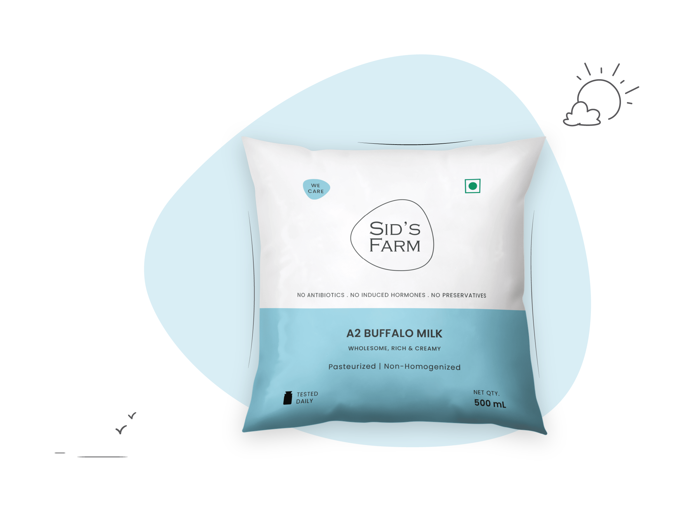
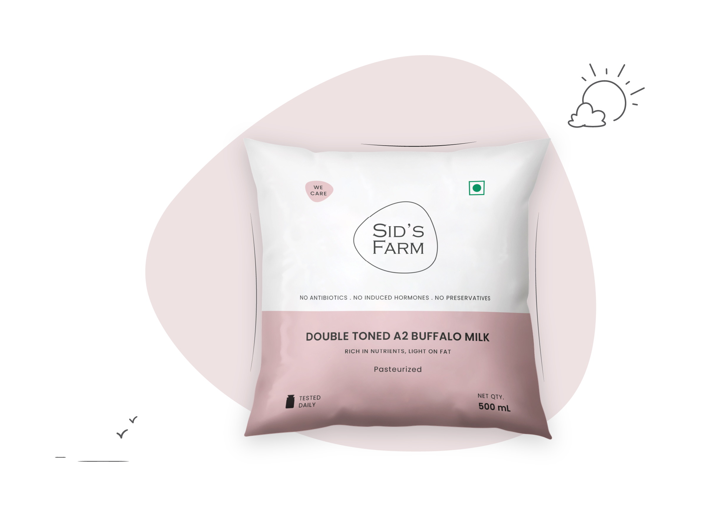
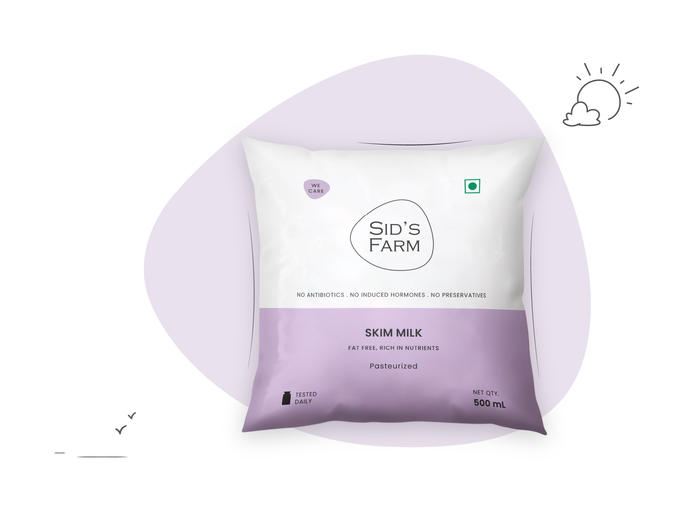
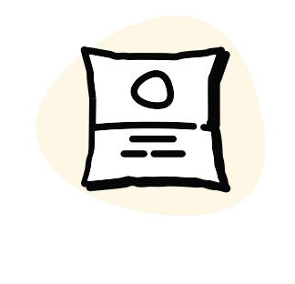
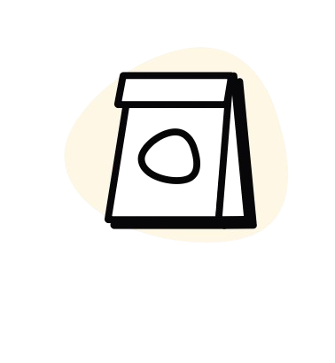

Milk That’s Tested For Safety - Everyday
Tested daily for antibiotics, hormones, and additives - it takes
more tests than any college kid! Only milk that aces every test is
delivered to your doorstep.
>10,000 tests per day!
Every batch of milk goes through strict quality checks to ensure
freshness, purity, and safety for your family every single day.
Here’s Why!
Check your daily reports
Track milk quality, hygiene standards, and production transparency
with easy-to-understand daily scientific reports.
Here
Experience the farm
Visit our farm to explore healthy cows, modern dairy practices,
and create joyful memories with your family and friends.
Visit us
Our Products

Daily Pro+
4 variants

Milk
4 variants

Curd
4 variants

Ghee
4 variants
Our Story
Sid’s Farm didn’t start as a business idea. It started as a parent’s
concern. When our founder, Dr. Kishore, returned to India in 2012,
he was simply looking for pure, safe milk for his two-year-old son,
Sid.
What surprised him was how hard it was to find milk he could truly
trust. He realised that if one parent felt this uncertainty, many
others did too. So instead of settling, he chose to build what he
couldn’t find.
With an education at IIT Kharagpur & UMass Amherst and years as a
quality engineer at Intel, Dr. Kishore applied the same rigour to
milk, with clear processes, stringent quality checks & batch-wise
testing.
One simple rule shaped everything: If it wasn’t good enough for his
own child, it wasn’t good enough to deliver. That belief became
Sid’s Farm and still guides every decision we make.”
10,000+
Safety Tests Conducted Every Single Day
5,000+
Trusted Farmer Network
30,000+
Happy Customers
See Our Journey
Happy Folks!
Sid's Farm consistently delivers premium-quality dairy
products that stand out for their freshness and purity. Their
milk, butter, and other offerings are not only..
Read more
Read more
Sandeep
@google reviews
@google reviews
Milk, Marriage & Middle-Class Morals 🥛💍 In our house, milk
isn’t just nutrition—it’s tradition. For over 3 years now, my
wife has been a die-hard fan of Sid's Farm milk..
Read more
Read more
Shyam Kumar
@linkedin
A Delightful and Educational Visit to Sid's Farm Our recent
trip to Sid's Farm was an enlightening experience that offered
a deep dive into the world of dairy production. Th..
Read more
Read more
Tarun Kumar
@google reviews
@google reviews
I stumbled upon sids farm on q-comms and had tried their curd
sometime back and fell in love! Taste is pure bliss....
Read more
Read more
Samay Salunke
@X
@X
Sid's Farm consistently delivers premium-quality dairy
products that stand out for their freshness and purity. Their
milk, butter, and other offerings are not only..
Read more
Read more
Sandeep
@google reviews
@google reviews
Milk, Marriage & Middle-Class Morals 🥛💍 In our house, milk
isn’t just nutrition—it’s tradition. For over 3 years now, my
wife has been a die-hard fan of Sid's Farm milk..
Read more
Read more
Shyam Kumar
@linkedin
A Delightful and Educational Visit to Sid's Farm Our recent
trip to Sid's Farm was an enlightening experience that offered
a deep dive into the world of dairy production. Th..
Read more
Read more
Tarun Kumar
@google reviews
@google reviews
I stumbled upon sids farm on q-comms and had tried their curd
sometime back and fell in love! Taste is pure bliss....
Read more
Read more
Samay Salunke
@X
@X
Download the app and recharge your wallet.

Subscribe to your daily dose of goodness.

Get 7am delivery right at your door step.
Get The App Now